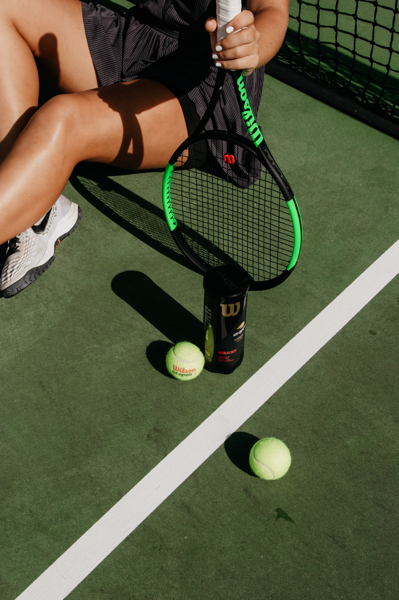
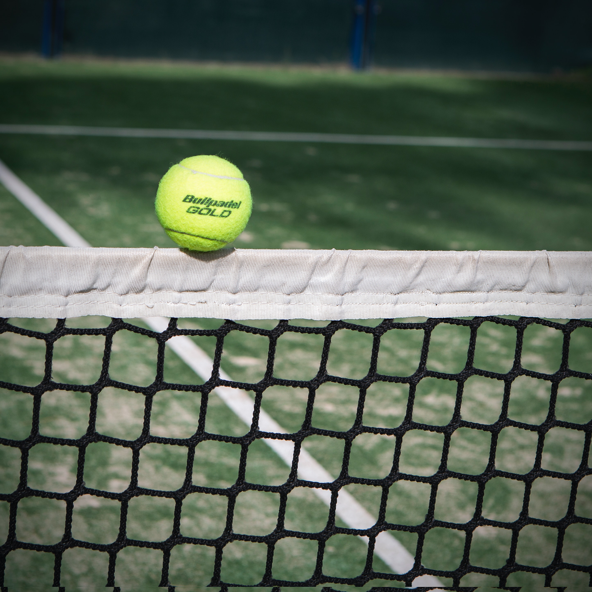

01
Школа большого тенниса для любителей тенниса
Школа тенниса TennisTeam была основана в 2013 году и была задумана, как школа для любителей, которые выбрали для себя большой теннис в качестве хобби. Кто-то из наших учеников занимался большим теннисом в детстве, а во взрослом возрасте решил продолжить. Кто-то ни разу не брал ракетку в руки и захотел попробовать большой теннис в качестве альтернативы скучному фитнесу. Так или иначе, всегда было и есть много желающих играть в теннис по вечерам после работы и в выходные.


02
Мы стараемся сделать теннис доступным!
Теннис - совсем не дешевый вид спорта, и не каждый человек может себе позволить самостоятельно арендовать корты и платить за индивидуальные занятия с тренером. Так появился очень популярный сейчас групповой формат тренировок для взрослых. Так как количество учеников школы довольно велико мы можем формировать группы, отталкиваясь от уровня подготовки каждого участника. Таким образом опытные игроки играют в группах с опытными игроками, а начинающие теннисисты - с начинающими. Расходы на оплату услуг тренера и аренду корта делятся между всеми участниками группы, поэтому занятия теннисом становятся доступнее.
03
Тренировки в Москве и теннисные кэмпы за рубежом
Одним из направлений деятельности теннисной школы являются теннисные сборы, так называемые теннисные кэмпы для любителей. Большой компанией (от 20 человек и более) мы выезжаем за рубеж, где тренируемся, проводим видео - разборы техники, а в свободное от тренировок время посещаем местные достопримечательности.